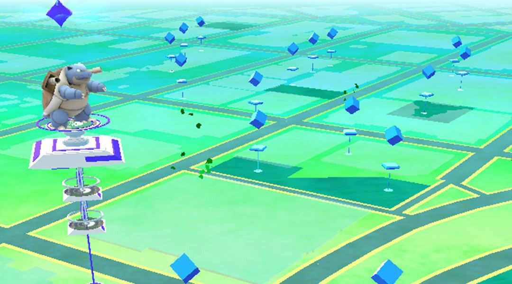

It is a fact that today the culture of games is already very widespread in our culture and almost everyone play some kind of game on a platform, be it a console or computer, but mainly on smartphones. Due to its portability, it is very common to find people playing on their smartphones. It is practical and accessible.
The games are increasingly immersive, either by the graphics, mechanics or the stories and narratives they have. For this reason, some technologies are becoming very popular in recent times. It provides new ways to interact with games, providing a greater immersion. Augmented reality has started to stand out in the smartphone gaming world. It offers a vast new range of possibilities for digital gaming to interact with the physical environments.
Augmented reality gaming (AR gaming) is the integration of game visual and audio content with the user's environment in real time to entertain, motivate, educate, and inspire the user. Augmented reality games, while not limited to mobile devices, are typically played on devices like smartphones, tablets and portable gaming systems. While playing the game, the player aims the device's camera at a location and through the device's screen, sees the area captured by the camera plus computer-generated graphics atop it, augmenting the display and then allowing the player to interact that way. AR gaming provides a uniquely immersive experience.
Immersion is only one way for players to enjoy a game. The experience of playing games can be characterize in four aspects: physical, mental, social, and emotional. AR games could be physical to the same extent as real-world games, with the added advantage that game content can be injected seamlessly into the real world. The mental aspect of a game concerns problem solving, deductive thought and reason. AR will be able to present game information in a spatial context, which may allow players to reason about it better. The social aspect of a game is the way in which players play with each other. It contains elements of collaboration, negotiation and relationship building. Thus, participants in AR games should be able to interact with each other in natural face to face communication. The emotional aspect of games is perhaps the most difficult to understand. It concerns the way a game affects a player emotionally, by the sympathies they develop with game characters or players and the emotions brought forth by immersion in the game world [3].
Games
“Pokémon Go”, released by Niantic in July 2016, quickly became a top mobile game and was downloaded more than 500 million times in its first year. The game by itself already presented something very flashy to the young audience caused by its nostalgic appeal because of the cartoon series and old video games. But besides that, the game brought something that was still uncommon. The use of augmented reality in its interaction. It is considered the breakthrough AR app for gaming. The game also created a lot of criticism and raised even more questions about how we interact with the world around us, what this technology can still provide in the future.
Currently, we can see several AR games that are as attractive, fun and immersive as you can imagine. One example is the "AR Dragon" game, a "pet simulator" that allows you to create your own pet dragon. Reviews of the game states that the dragon is able to interact with the player and the physical scenery quite accurately and realistically, as if he really were there.
AR Dragon
Trailer
Gameplay
ARise
Another example is the game "ARise". It is a 3D puzzle AR game that the player navigates around the virtual scene to solve the way.
Trailer
Gameplay
Harry Potter: Wizards Unite
“Harry Potter: Wizards Unite” is a new game that will be release sometime in 2019. Players will be able to explore real-world surroundings to unravel a global mystery, cast spells, and encounter fantastic beasts and iconic characters along the way. The expectation is that this game will be as popular as Pokémon Go.
Trailer
Gameplay Teaser
Guidelines
Even though AR gaming is becoming mainstream, the adoption and use of this tech depends on how good the user interaction is. There are design principles to help designers enhance usability. These principles are sets of generally applicable laws, human biases and design considerations reflecting the accumulated knowledge and experience of practitioners and researchers. The principles aim to help designers to enhance the system usability, influence perception, improve the system appeal, teach users and help decision making during the development. A careful selection and application of appropriate principles should increase the probability of a successful user interaction. Also, the manner the designer applies each principle depends on his/her ability to rationalize, understand, and contextualize all the aspect of the system his/her is designing.
One of the most known design principles is Jakob Nielsen's heuristics. Nielsen developed the heuristics in 1994 and they are the most-used usability heuristics for user interface design. They are as follows:[2].
Nielsen's heuristics
Visibility of system status:
The system should always keep users informed about what is going on, through appropriate feedback within reasonable time.
Match between system and the real world:
The system should speak the user's language, with words, phrases and concepts familiar to the user, rather than system-oriented terms. Follow real-world conventions, making information appear in a natural and logical order.
User control and freedom:
Users often choose system functions by mistake and will need a clearly marked "emergency exit" to leave the unwanted state without having to go through an extended dialogue. Support undo and redo.
Consistency and standards:
Users should not have to wonder whether different words, situations, or actions mean the same thing. Follow platform conventions.
Error prevention:
Even better than good error messages is a careful design which prevents a problem from occurring in the first place. Either eliminate error-prone conditions or check for them and present users with a confirmation option before they commit to the action.
Recognition rather than recall:
Minimize the user's memory load by making objects, actions, and options visible. The user should not have to remember information from one part of the dialogue to another. Instructions for use of the system should be visible or easily retrievable whenever appropriate.
Flexibility and efficiency of use:
Accelerators—unseen by the novice user—may often speed up the interaction for the expert user such that the system can cater to both inexperienced and experienced users. Allow users to tailor frequent actions.
Aesthetic and minimalist design:
Dialogues should not contain information which is irrelevant or rarely needed. Every extra unit of information in a dialogue competes with the relevant units of information and diminishes their relative visibility.
Help users recognize, diagnose, and recover from errors:
Error messages should be expressed in plain language (no codes), precisely indicate the problem, and constructively suggest a solution.
Help and documentation:
Even though it is better if the system can be used without documentation, it may be necessary to provide help and documentation. Any such information should be easy to search, focused on the user's task, list concrete steps to be carried out, and not be too large.
However, this page is focusing on specific guidelines on how to design a good AR gaming experience. The guidelines shown in the next section are the only papers found on the research community about the subject.
What do we know about how to design good AR experiences as they relate to games?
The growing popularity of AR games has led for a need to take a closer look at design related issues that impact on player experience. While most of the issues are technology, it is almost always assumed that the augmented reality element in itself will provide a sufficient experience for the player. This creates a need to analyze what makes a successful augmented reality game.
There are a few research papers that set guidelines for designing AR games. Wetzel et al present a set of design guidelines which are drawn from experiences of three mixed reality games. Xu et al analyze and generate design lessons from dozens of HAR (Handheld AR) games. Xu ate al summarize their results as “pre-patterns” derived from existing practices into repeatable principles and solutions.
Wetzel et al present a set of high level design guidelines. The guidelines provide specific guidance on relationships between real and virtual space, social interaction, use of AR technologies. The game “Interference” and “TimeWarp” were developed by them and the game “The Eye of Judgment” is a commercial game made by Sony PlayStation3.
Interference
Interference has a group of six players that assume of the roles of telecommunication technicians. They must investigate strange breakdowns in the network. The players seek out to find these disturbances. Figure 1 illustrates a blue sphere that is a node in the network. The players can see two lines showing the directions for the other nodes. There are orange nodes that need repairs by playing a certain melody on magic flute they got from one of the non-player characters in the game. The game was developed with “Magic Lens Box”. It extends the ARToolkit. The game runs on Ultra-mobile PC (UMPC).
Figure 1: Interference
TimeWarp
The game is based on a traditional German story about the existence of small elves who help citizens during the night until on day they disappeared. The plot of the game is that these elves are stuck in different time periods, and the goal is to find the elves by time traveling. The player needs to solve several tasks to free the elves. Figure 2 illustrates the original medieval building that was destroyed during the war superimposed to the reconstructed building. The game uses a head-mounted display and a handheld-based device for interaction. The action is executed by pressing a mouse button.
Figure 2: TimeWarp
The Eye of Judgment
It is a collectible trading card game for the PlayStation 3. The game uses augmented reality to visualize the characters and effects on the cards. The player can choose between a computer or real opponent – local or remotely. Each player has a deck of cards that during each turn, they draw new cards. The playing files is a grid of nine squares, which the first player to conquer five squares win the game. The player can summon monsters to attack the opponent or use spells. Figure 3 shows the playing mat with cards and the camera setup on the small image and on the big image it shows the augmented view on the screen.
Figure 3: The Eye of Judgment
Table 1 summarises the different range of characteristics, technologies and interaction techniques from the three games (Interference, Timewrap and The eye of Judgment) [5].
Table 1. Comparison of game characteristics.
Characteristic
Interference
TimeWarp
The Eye of Judgment
Augmented Reality
Magic Lens Box
Optical see-through HMD
Desktop AR
Tracking
Webcam, marker based
GPS, Inertial sensor
Webcam, marker based
Playing Area
City streets
City streets
table
Interaction devices
none
mouse
cards
Interaction techniques
Looking
Looking, Proximity, Selection, Steering
Looking, Playing cards
Wetzel's guidelines
Wetzel et al considered the elements which impacted the player experience to develop the guidelines. Not all of the guidelines are needed to every augmented reality games.
Experiences First, Technology Second:
While usability and technical elements are critical to success, there is a need to place as much emphasis on game design. One questionable example is the game RoboRaid in the HoloLens. Is HoloLens the best technology for the game?
Figure 4: RoboRaid
Stick to the theme:
Avoid selecting new technologies that are not relevant in the context of the game. The technology should fit the theme of the game. One example would be the choice of the AR Dragon game on HoloLens. By the limitation of the HoloLens 1.0, the gesture of air tap would not allow all the game interactions.
Do not stay digital:
Augmented reality games do not have to focus exclusively on digital technology. Any card games as The Eye of Judgment is an example of this guideline. Another example is the AR card game Genesis. Genesis is a skill-based real-time battle system.
Figure 5: Genesis
Use the Real Environment:
Large distances between different mixed reality elements can bored for the player. This can be avoided by making players full use the real space. One example can be the creation of pokestops on Pokemon GO.

Figure 6: Pokestops
Keep it simple:
AR games should focus on simple and clear interaction setup. Timewarp game use a range of devices (HMD, a laptop and a mouse). Lenovo Star Wars Challenge: Holochess and Combat use the lightsaber controller as input.
Figure 7: Lenovo Star Wars Challenge: Combat
Create Sharable Experiences:
Augmented reality games can interest others players and non-players in its content. Sharable experiences allow all to gain insight of the game. One current example is the Pokemon Go Raid Battle. It is a cooperative event that trainers have to work together to defeat a powerful pokemon.
Figure 8: Lenovo Star Wars Challenge: Combat
Use Various Social Elements:
Some games only have virtual characters. This introduces a risk of the experience be lonely and disconnected from surrounding environment. The use of real people allows them to have different roles. It also allows collaboration by sharing thoughts on hot to complete the game challenges. One example is the FatherIO game.
Figure 9: FatherIO roles
Show Reality:
One of the problems of AR games is the real environment being completely removed from the users view. The real environment is obscured. This brings the biggest problem with AR: Occlusion. That is, the ability to hide virtual objects behind real elements. The company Niantic (creator of pokemon go) has published a video showing their capabilities to do occlusion.
Turn weaknesses into strengths:
Most technologies used in AR games can have problems. GPS tracking or internet signal can be poor. The game should include this as part of the game. FatherIO game could assume the player with no mobile signal is in a hidden area, e.g. safehouse.
Do not just convert:
Convert existing games to include augmented reality does not guarantee a genuine engaging game play. Some games do not map well to augmented reality. One example is the brickscape game. The game has the option to use AR, but it does not add anything to the experience. The game can be enjoyable without AR, which it does not justify why AR is a good addition to the game.
Create meaningful content:
AR adds interesting visual objects to games by adding virtual 3D content in the real world. The visual objects should be meaningful. It should allow the player to walk around and look at it from different perspective. One current game that considers this guideline is the ARise. The player solves the puzzle by changing his/her perspective and moving the character around the virtual scene.
Choose your tracking wisely:
Using new and potentially better tracking methods is important for AR applications and games. Unreliable and imprecise data can cause poor interaction. Location based and/or marker tracking should be reliable for the success of the game.
Table 2 list the guidelines and a small summary.
Table 2. Overview of game design guidelines.
Guideline
Summary
Experiences First, Technology Second
Design the experience first then consider the relevant technologies.
Stick to the theme
Select technologies which are relevant to aspects such as time period and ambience.
Do not stay digital
Use a combination of real and virtual elements such as paper maps.
Use the Real Environment
Make use of the real world location, beyond simply locating virtual elements in a real space.
Keep it simple
Design interaction schemes which are easy to understand and use.
Create Sharable Experiences
Allow other people to take part in the experience, for example by using tablet PCs and the magic lens metaphor rather than a head mounted display.
Use Various Social Elements
Allow players to interact with virtual characters, other players, non-players and actors.
Show Reality
Do not augment spaces so that the underlying real components are totally obscured.
Turn weaknesses into strengths
Use potential technical problems as elements within the gaming experience.
Do not just convert
Do not simply convert a game to augmented reality.
Create meaningful content
The 3d content in the game should add something interesting to the game.
Choose your tracking wisely
Different tracking methods have different characteristics that should be taken into account.
Wetzel et al created a high-level design guidelines that are relevant to augmented reality games. However, the guidelines may not be applicable in all contexts.
Xu's Pre-Patterns
Xu et al analyze and generate design lessons from dozens of handheld AR (HAR) games. The design patterns are drawn from academic and commercial AR games, and also from their years of experience designing and teaching HAR game design. They summarize into a set of design “pre-patterns” as a means of formalizing significant design lessons derived from these existing practices into repeatable principles and solutions. They briefly summarize a few small design lessons into a list of dos and don’ts [6].
Do
Support one-hand interaction
Consider the natural viewing angle
Make sure at least one tracking surface is in view
Don'ts
Do not tire players out physically
Do not encourage fast actions
Xu et al presents nine design pre-patterns that consider four kinds of embodied human skills. Embodied interactions rely on a person’s existing embodied skills in everyday life (naïve physics, bode awareness and skills, environment awareness and skills, social awareness and skills).
Device Metaphors:
Handheld device functions as a familiar object from everyday life. HAR interface can have similarities to many kinds of lenses (cameras, magnifiers, microscope, x-ray machines).
Control Mapping:
HAR devices provides a variety of control mechanics (touch screens and accelerometers). Therefore, HAR interface supports a lot of physical actions as a game controller. A designer needs to make conscious decisions when mapping the actions to the game.
Seamful Design:
Seamful design concept is in which designers take advantage of the physical limits rather than ignoring them. HAR interfaces has technological limitations. This pre-pattern is to integrate the technological limitation through game design.
World Consistency:
A player expects that the hybrid world (mixes physical and virtual realities) will obey the principles of the real world (e.g.: laws of physics). Designers can choose between creating a realistic experience and defy user expectations.
Landmarks:
Players navigate through an augmented reality game space by using landmarks as point of reference. Adding real world landmarks helps the players to move in the mixed reality.
Personal Presence:
A player’s presence in a digital game can happened in different ways. Normally, it depends on the game genre. It can be a first-person shooter games (first person view), role-playing games (avatars controlled from the third person perspective), strategy games (player behaves like a god). Any player’s physical movements connect to the player virtual persona. It gives a stronger sense of presence.
Living Creatures:
The game experience improves if there is an illusion of game characters being responsive to physical events (sound, player’s physical movement and hand gestures). It mimics the behavior of living beings.
Body constraints:
HAR games should consider the relative position between players. It can change the options for the other player as in the game of chess. In competitive games (e.g.: tower of defense), the player strategy changes accordingly to the other players position.
Hidden information:
HAR games has the information on private displays. However, the information can be revealed by body movements or during communication. HAR interfaces can leverage player’s movement. The designer can map player’s behaviors to the game to allow other players to identify the others’ signals or to give misleading signals. It should avoid one-to-one mapping to have a better game experience.
Table 3 illustrates the nine design pre-patterns.
Table 3. Summary of the nine design pre-patterns.
Title
Meaning
Embodied Skills
Device Metaphors
Using metaphor to suggest available player actions
Body Awareness & Skills Naïve physics
Control Mapping
Intuitive mapping between physical and digital objects
Body Awareness & Skills Naïve physics
Seamful Design
Making sense of and integrating the technological seams through game design
Body Awareness & Skills
World Consistency
Whether the laws and rules in physical world hold in digital world
Naïve physics Environmental Awareness & Skills
Landmarks
Reinforcing the connection between digital-physical space through landmarks
Environmental Awareness & Skills
Personal Presence
The way that a player is represented in the game decides how much they feel like living in the digital game world
Environmental Awareness & Skills Naïve physics
Living Creatures
Game characters that are responsive to physical, social events that mimic behaviours of living beings
Social Awareness & Skills Body Awareness & Skills
Body constraints
Movement of one’s body position constrains another player’s action
Social Awareness & Skills Body Awareness & Skills
Hidden information
The information that can be hidden and partially revealed can foster emergent social play
Social Awareness & Skills Body Awareness & Skills
The pre-patterns leverage skills of the players and can be used to inform the design of gameplay experiences that take advantage of embodied interaction enabled by HAR interface. They provide a solid foundation for thinking about designing fun and compelling HAR games. It helps designers avoid common pitfalls and understand how to create game experiences using handheld augmented reality.
Conclusion
Augmented Reality is a technology that has existed in concept for long time. The last few years has seen the field change radically as the technology has become more available to consumers, and companies has started to put more resources in to developing commercial AR products. There are a lot of possibilities to explore with augmented reality. Augmented reality games enables a more engaging experience.
The guidelines presented aim to solve some of the many challenges associated with user experience design of augmented reality applications. Dirin et al. list challenges faced by mobile augmented reality applications. One of the challenges is the physical aspect. Often, almost the whole body needs to be involved while interacting with AR application. Users need to interact and communicate with the application by clicking, tapping, moving, gesturing or giving voice commands. Other challenge is the development of the user interface. Designers have already managed to construct user interface and interaction metaphors for non-AR applications. All mobile application design metaphors are not necessarily applicable to mobile augmented reality applications; hence, new interface and interaction metaphors specific for mobile augmented reality applications are needed. Another challenge is the user experience design. Designers are required to adjust their design approaches, which are based on 2D sketching of non-AR objects using a pen and paper or mock-up tools, towards sketching of 3D scenes and objects that are viewed through a 2D perspective [1].
When designing for interactions with device through physical media, it is important to design for intuitive user control. A common solution in creating intuitive interactions is to use metaphors. Metaphors help the user understand the digital worlds actions by relating it to the actions of the physical world, and this has been used during many years in making digital design more understandable. When designing for interactions with the device through digital media, the problem is mainly tracking and registration. The problem for geo-location based AR is accuracy and constant connectivity. These limitations are hard to design around, but they need to be considered. When considering the user experience, the user can lose focus or get lost in the augmented space if an unlimited freedom is provided. Therefore, a design that helps the user in finding what they are looking for or that limits the users space should be provided. When designing for physical interactions with an object that does not physically exist in the real space, consider solutions wherein the user does not need to hold, grab or otherwise perform interactions that require a lot of the hand to interact with the object. This helps avoiding the occlusion problems. Interactions such as poking, pushing or otherwise interacting in ways where the users’ hand only interacts with the edge of the virtual object also helps avoid this problem [4].
There is no one golden rule to follow when designing an AR system, but it is very important to consider the context in which the user is using the system, and the purpose the user is hoping to achieve, and act accordingly to choose the guidelines and design solutions that fit best into that scenario. The presented guidelines might serve as a good starting point for anyone attempting to design AR game.
Reading recommendation:
Wetzel, R., McCall, R., Braun, A. K., & Broll, W.(2008, November). Guidelines for designing augmented reality games. InProceedings of the 2008 Conference on Future Play: Research, Play, Share(pp. 173-180). ACM
References
Dirin, Amir, and Teemu Laine. "User Experience in Mobile Augmented Reality: Emotions, Challenges, Opportunities and Best Practices." Computers 7.2 (2018): 33.
Nielsen, Jakob. "10 Usability Heuristics for User Interface Design."Accessed: 2019-03-09.
Nilsen, Trond, Steven Linton, and Julian Looser. "Motivations for augmented reality gaming." Proceedings of FUSE 4 (2004): 86-93.
Ortman, Erik, and Kenneth Swedlund. "Guidelines for user interactions in mobile augmented reality." (2012).
Wetzel, R., McCall, R., Braun, A. K., & Broll, W.(2008, November). Guidelines for designing augmented reality games. InProceedings of the 2008 Conference on Future Play: Research, Play, Share(pp. 173-180). ACM
Xu, Yan, Evan Barba, Iulian Radu, Maribeth Gandy, Richard Shemaka, Brian Schrank, Blair MacIntyre, and Tony Tseng. "Pre-patterns for designing embodied interactions in handheld augmented reality games." In Mixed and Augmented Reality-Arts, Media, and Humanities (ISMAR-AMH), 2011 IEEE International Symposium On, pp. 19-28. IEEE, 2011